Deploying and Maintaining Interactive Biomedical Dashboards
Lesley Chapman Hannah, Ph.D., M.S.
College of Graduate Studies
Northeast Ohio Medical University
Shiny App Documentation: Rationale
- Shiny app can be considered an ongoing biomedical analytical product
- App executes code repeatedly in response to user inputs, often for different users and different analytic questions
- Proper documentation makes the app usable beyond the original developer
- Documentation makes a Shiny app reviewable by allowing others to understand what data are used, how they are processed, and what computations underlie each output
Shiny App Documentation: Rationale
- Documentation allows the user to understand what data are used, how they are processed, and what computations underlie each output
- Documentation also supports reproducibility by providing descriptions of data sources, preprocessing steps, package dependencies, and default parameters make it possible to regenerate results or re-run the analysis under controlled conditions
- Documentation also helps future users or developers to identify where key logic lives and how changes will affect the app’s behavior
Project Documentation Checklist
App documentation includes:
Clear project and directory structure
App-level README describing purpose, data sources, and outputs/Code with comments
Shiny App: Directory Structure
Directory structure should make the executable analysis clear and include:
- code runs the app
- data file(s) the app depends on
- files are required for deployment
Shiny App: Directory Structure
UCEC Shiny App Directory Structure
- app.R : complete UI and server logic
- ucec_data.csv : local data dependency used by the app
Code can be used for:
- local testing
- deployment to shinyapps.io
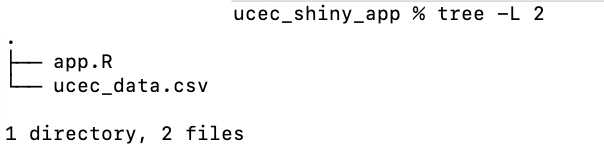
Shiny App: README
- README provides the information needed for users to understand and repeat the analysis
- Biomedical analyses evolve as data are updated, code changes are implemented, or questions change
- README preserves essential information about the analysis so that it remains usable and interpretable over time
Text editors
README files are plain text files [typically README.md]
Text editors are used for :
- Write and edit project descriptions and instructions
- Update documentation as analyses or code change
- Correct errors or clarify usage without altering code behavior
- Maintain consistent formatting that works across platforms
Text editors
Command line Text Editors
- nano: simple, beginner-friendly terminal editor
- vim / vi: powerful terminal editor, common on servers
Desktop text editors
- VS Code: widely used, Markdown preview, Git integration
- RStudio: convenient for README files in R / Shiny projects
- Sublime Text: lightweight, fast text editor
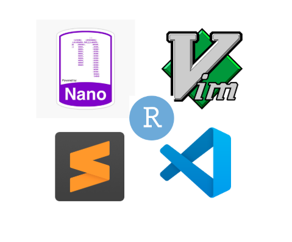
UCEC Study: README
Project Overview Section
- Defines problem being addressed
- Lists disease domain (UCEC)
- Analytical purpose (exploratory analysis)
- Project structure [files used to run app]
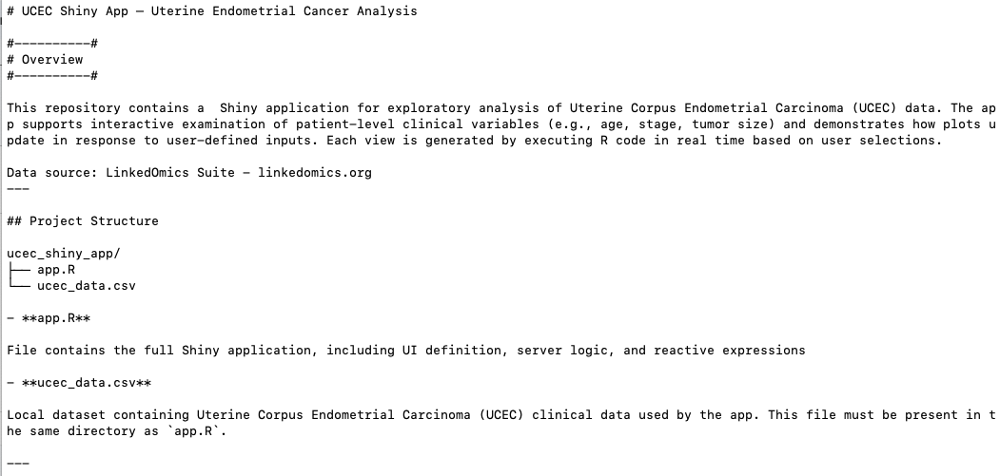
UCEC Study: README
Data Description
- Defines what the analysis operates on
- Describes: representative variables (Age, Stage, Tumor Size)
Software Requirements
- programming language (R)
- required packages
Package Installation
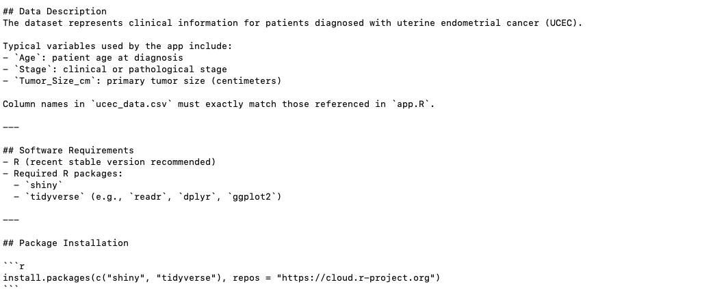
UCEC Study: README
Running the app
- how to install dependencies
- how to launch the app locally
Deployment Notes
- documents how the analysis is intended to be hosted and shared (i.e. : shinyapps.io)
Reproducibility Considerations
Intended Use
- exploratory analysis and teaching,
- not clinical decision-making
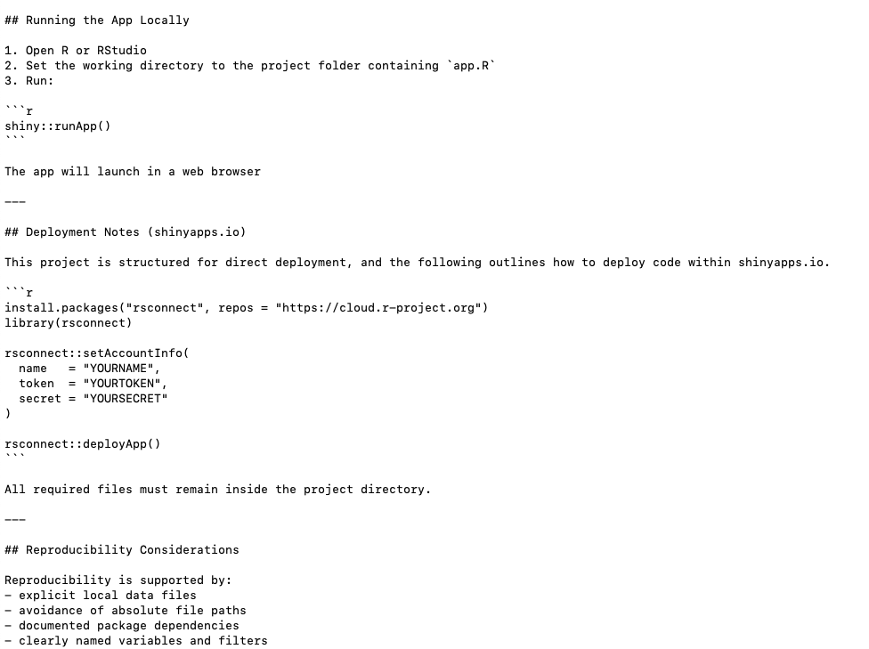
Shinyapps.io
- cloud hosting service for R Shiny applications
- Tool that allows users to publish and share interactive Shiny apps
Provides:
- server that can host R and Shiny
- security configuration
- URL routing
- session management
Launch app via shinyapps.io
Deploy to shinyapps.io
- Copy code and README to a new directory \(\rightarrow\) directory to be deployed to shinyapps.io
- Create an shinyapps.io account [supplementary video on canvas]
- Install rsconnect via R Studio
- Authenticate once per machine via command line or R
- Deploy the folder
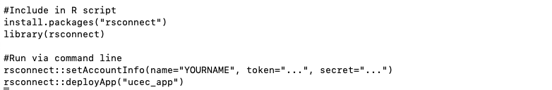
Shinyapps.io: Set Up Directory and Transfer Files
The following steps will be completed using MacOS
n.b.: complete additional independent searches via Google or classmates if using Linux or Windows
- Create a new directory
- Transfer R code, data, and README to directory
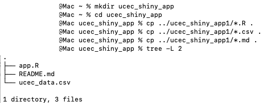
Shinyapps.io
- the deployable folder should should have a similar file structure as shown on the right
- Files needed to run the app must live inside this folder
Shinyapps.io
Open a new Rscript in R studio and run [should be done once per machine]:
install.packages("rsconnect")
rsconnect::setAccountInfo(
name = "<USERNAME>",
token = "<TOKEN>",
secret = "<SECRET>"
)Information above can be found via your shinyapp.io account
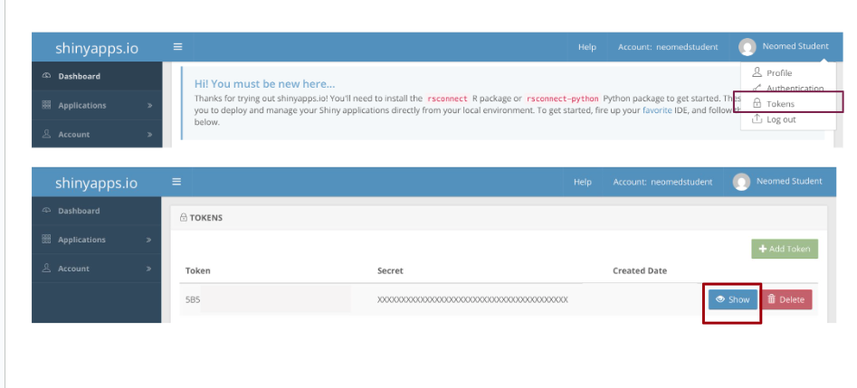
Deploy Shiny App
- Deploy app via command line
- If you’re in your app directory, navigate to the directory just above your directory:
- Run the following via the command line:
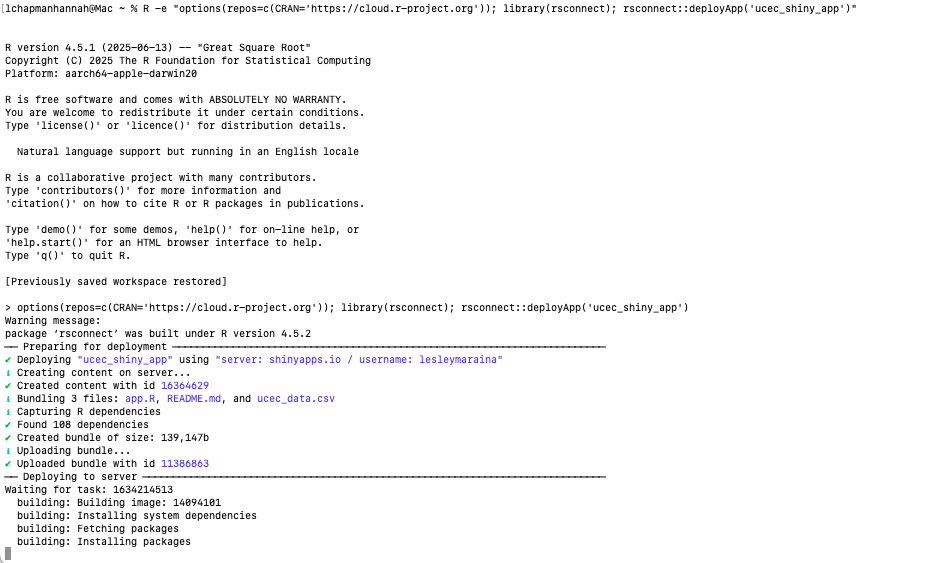
View Shiny App
View shiny app via listed URL
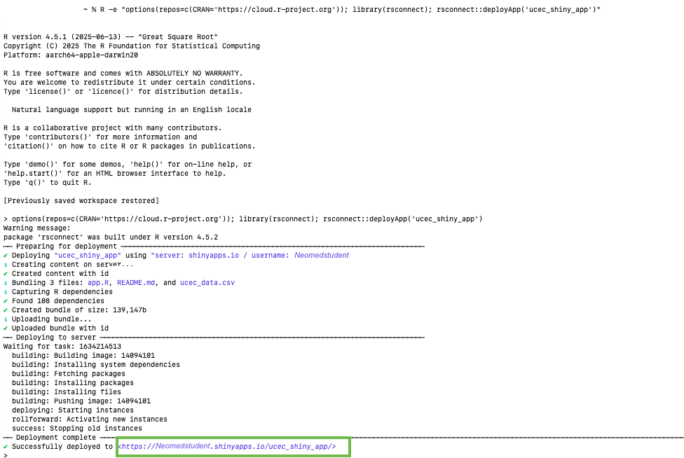
View Shiny App
View shiny app via listed URL
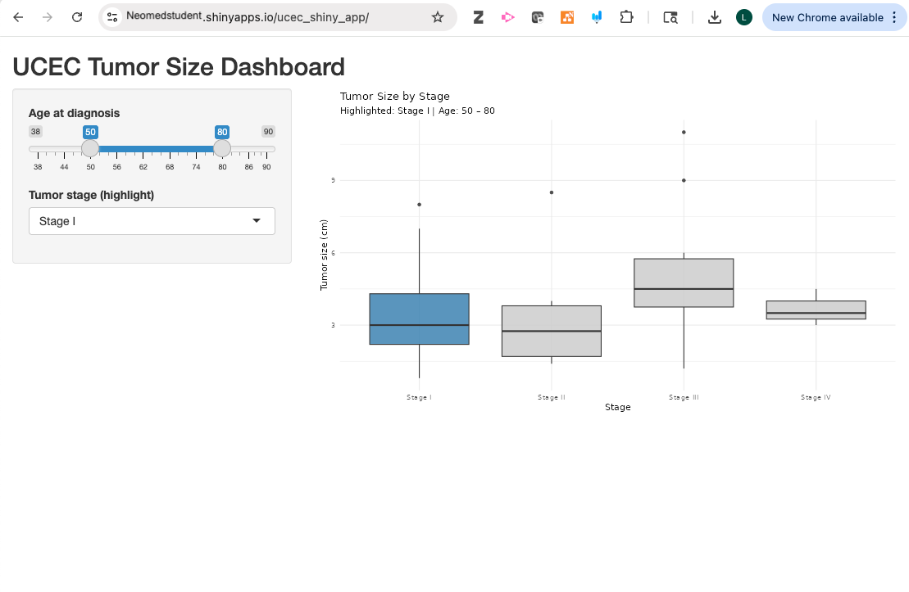
Summary
- clear documentation allows users to understand the data sources, preprocessing steps, and computations that underlie each dashboard output
- README files document the scientific question, data structure, dependencies, and intended use so the app remains interpretable over time
- shinyapps.io provides a practical deployment platform by handling server infrastructure, session management, and URL routing for Shiny applications
- Deploying a Shiny app involves packaging code, data, and documentation together